ПОЛУПРОВОДНИКОВЫЕ ДИОДЫ
- Виды полупроводников
- Устройство полупроводникового диода
- Условные графические обозначения полупроводниковых диодов
- Способы включения диода
- Вольтамперная характеристика диода
- Основные параметры диодов
- Классификация диодов
- Принцип работы полупроводникового диода
- Выпрямительные диоды
Полупроводники - вещества, которые по своему удельному сопротивлению занимают промежуточное положение между проводниками и диэлектриками. Сопротивление полупроводников сильно зависит от температуры и концентрации примесей. В производстве полупроводниковых приборов наибольшее распространение получили такие материалы, как германий и кремний.
Носителями зарядов в полупроводниках являются свободные электроны (-) и дырки(+). Дырка - место на внешней орбите атома, где ранее находился электрон.
Виды полупроводников
Полупроводники, которые состоят только из атомов германия или кремния, называют чистыми, или собственными.
Полупроводники, в которых свободных электронов значительно больше, чем дырок, называют полупроводниками n-типа. Примеси в таких полупроводниках называют донорами. Основными носителями заряда являются электроны, а неосновными — дырки.
Полупроводники, в которых свободных дырок значительно больше, чем электронов, называют полупроводниками p-типа. Примеси называют акцепторами. Дырки — основные носители, а электроны — неосновные.
Принцип действия большинства полупроводниковых приборов основан на явлениях, происходящих на границе двух полупроводников с различными типами электропроводности -р-n переходе.
Устройство полупроводникового диода
Полупроводниковым диодом называют полупроводниковый прибор с одним электронно-дырочным (р-n) переходом (основная часть) и двумя выводами. Вывод из р-области называется – анодом, из n-области – катодом.
В зависимости от формы и размера p-n-перехода различают плоскостные (рис. 1) и точечные диоды (рис. 3). У точечных диодов форма p - n перехода в виде точки, у плоскостных - в виде плоскости, имеющей значительную площадь. Плоскостные диоды могут пропускать значительные токи, но работают на невысоких частотах. Точечные диоды наоборот могут работать на высоких частотах, но пропускают маленькие токи.
К металлическому основанию плоскостного диода, называемому кристаллодержателем, припаивается пластинка полупроводника n-типа. Сверху в нее вплавляется капля металла, обычно индия. Атомы индия диффундируют (проникают) в полупроводниковую пластинку и образуют у ее поверхности слой р-типа. К кристаллодержателю и индию привариваются проводники, которые служат выводами диода.
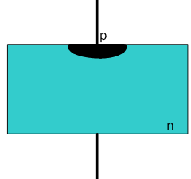
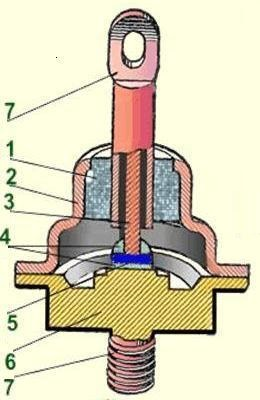
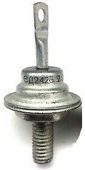
Рис. 1 - Устройство плоскостного диода (справа - плоскостной выпрямительный диод Д242Б)
1 - изолятор, 2 - корпус, 3 -вывод анода, 4 - припой, 5 - кристалл,
6 - кристаллодержатель, 7 - внешние выводы
Точечный полупроводниковый диод состоит из пластинки полупроводника n-типа и заостренной пружинки из вольфрама или фосфористой бронзы диаметром 0,1 мм. Через прижатую к полупроводниковой пластинке пружинку пропускают электрический ток большой силы. Металлическая пружинка сваривается с полупроводниковой пластинкой, образуя под острием р-область.
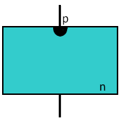
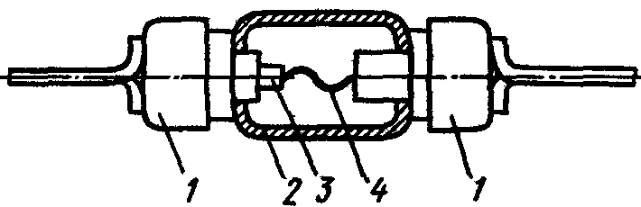
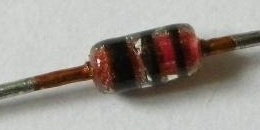
Рис. 2 - Устройство точечного диода (справа - точечный диод КД522Б)
1 — выводы, 2 - стеклянный баллон, 3 - пластинка полупроводникаи, 4 - металлическая проволочка-пружина
Чем больше площадь р-n-перехода, тем больший ток может через него протекать и тем больше его емкость. Плоскостные полупроводниковые диоды применяются в электрических цепях, в которых протекают большие токи и когда емкостные свойства не оказывают заметного влияния на работу диода. Точечные диоды применяются в цепях с малыми токами и в высокочастотных устройствах.
Для защиты от механических повреждений, попадания на полупроводник света, пыли и влаги его помещают в герметический корпус.
Условные графические обозначения
полупроводниковых диодов
Таблица 1
 |
Диод полупроводниковый выпрямительный, общее обозначение |
 |
Стабилитрон и стабистор |
| Стабилитрон с двусторонней проводимостью | |
 |
Варикап |
| Диод Шоттки | |
 |
Светодиод |
 |
Фотодиод |
Способы включения диода
Если к диоду подключить внешний источник напряжения плюсом к аноду (р-области), а минусом к катоду (n-области), такое подключение называется прямым включением (рис. 3), а протекающий через него ток — прямым током.

Рис. 3 - Прямое включение диода
Если источник внешнего напряжения переключить плюсом к катоду и минусом к аноду, такое включение диода называют обратным включением(рис. 4), а протекающий через него ток — обратным током. При большом значении обратного напряжения происходит пробой р-n-перехода.
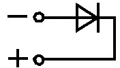
Рис. 4 - Обратное включение диода
Пробой может быть тепловым или электрическим. При тепловом пробое разрушается кристалл и свойства р-n-перехода теряются. Электрический пробой, не перешедший в тепловой, является обратимым, т. е. свойства р-n-перехода восстанавливаются при снятии обратного напряжения.
Вольтамперная характеристика диода
График, приведенный на рис. 7, называется вольтамперной характеристикой (ВАХ) диода. Из ВАХ диода видно, что сила протекающего через него тока зависит от полярности приложенного напряжения. При прямом напряжении ток большой (мА, А), а при обратном напряжении — в сотни и даже тысячи раз меньше (мкА, мА).
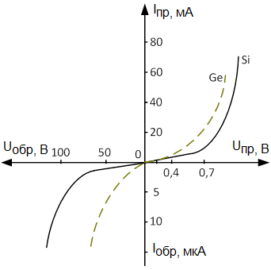
Рис. 5 - Типовые вольт-амперные характеристики германиевого
и кремниевого полупроводниковых
диодов, масштаб по оси тока и напряжения
меняется при переходе через начало координат
Левая часть характеристики называется обратной ветвью характеристики, правая часть - прямой ветвью.
Основные параметры диодов
К этой информации обращаются в тех случаях, когда указанный в схеме элемент недоступен, что требует найти ему подходящий аналог.
В большинстве случаев, если требуется найти аналог тому или иному диоду, первых пяти параметров из таблицы 1 будет вполне достаточно. При этом желательно учесть диапазон рабочей температуры элемента и частоту.
Таблица 2
| Обозначение | Описание |
|---|---|
| Iпр.max | Максимально допустимый постоянный прямой ток |
| Iобр | Постоянный обратный ток |
| Uпр | Постоянное прямое напряжение |
| Uобр.max | Максимально допустимое обратное напряжение |
| Pmax | Максимально допустимая мощность, рассеиваемая на диоде |
| Pср | Средняя за период мощность, рассеиваемая диодом, при протекании тока в прямом и обратном направлениях; |
| Iпр.ср.max | Максимально допустимый средний прямой ток |
| Iвп.ср.max | Максимально допустимый средний выпрямленный ток |
| Uобр | Постоянное напряжение , приложенное к диоду в обратном направлении |
| Iпр.ср | Прямой ток, усредненный за период |
| Iобр.ср | Обратный ток, усредненный за период |
| Rдиф | Дифференциальное сопротивление - отношение приращения напряжения на диоде к вызвавшему его малому приращению тока |
| Uпр.ср | Среднее прямое напряжение диода при заданном среднем значении прямого тока |
Классификация диодов
Таблица 3
| Признак классификации | Наименование диода |
|---|---|
Площадь перехода |
|
Полупроводниковый |
|
Назначение |
|
Принцип действия |
|
Принцип работы полупроводникового диода
В основу работы диода положено свойство p-n-перехода хорошо пропускать ток в одном направлении и плохо в другом. Диод состоит из одного p-n-перехода и проводит ток в одном направлении только тогда, когда величина напряжения, приложенного к диоду, больше величины потенциального барьера. Для германиевого диода минимальное внешнее напряжение равно 0,3 В, а для кремниевого - 0,7 В.
Если монокристалл полупроводникового материала с одного конца легировать примесями типа р, а с другого - примесями типа n, то между областями с различным типом проводимости образуется р-n-переход. Некоторые дырки из области р диффундируют в область n. В результате область р получает небольшой отрицательный заряд. Аналогичным образом электроны из области n диффундируют в область р, и область n оказывается заряженной положительно. В тонком слое между областями n и р электроны и дырки рекомбинируют, и так как этот слой в результате имеет очень мало свободных носителей заряда, его называют обедненным слоем. Этот слой действует как потенциальный барьер, препятствующий дальнейшей диффузии носителей зарядов, и переход находится в состоянии динамического равновесия (рис. 6, а).
Если внешнее напряжение приложено к выводам диода таким образом, что анод (А) имеет положительный потенциал по отношению к катоду (К), то будет наблюдаться уменьшение толщины обедненного слоя. Потенциальный барьер при этом снижается, что способствует протеканию тока через переход. С увеличением внешнего напряжения ток через переход возрастает по экспоненциальному закону до тех пор, пока внешнее напряжение не станет равным величине потенциального барьера, т. е. результирующее напряжение на переходе станет равным нулю. Дальнейшее возрастание тока через переход ограничивается только сопротивлением полупроводникового материала. Если полярность внешнего напряжения изменить на обратную, то величина потенциального барьера возрастет, и основные носители не смогут преодолеть потенциальный барьер. В этих условиях, однако, через переход будет протекать незначительный ток, называемый обратным током. При возрастании внешнего обратного напряжения этот ток остается постоянным, пока напряжение не достигнет точки пробоя. В этой точке при постоянном напряжении ток быстро возрастает (рис. 6, б).
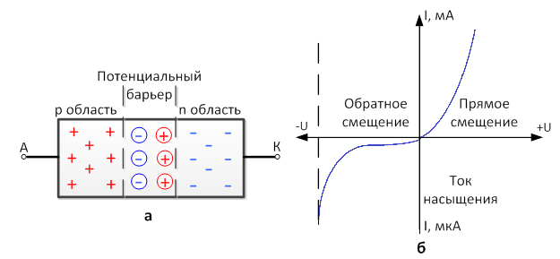
Рис. 6 - Полупроводниковый переход с потенциальным барьером:
а - образованным диффузией носителей зарядов;
б - вольт-амперная характеристика полупроводникового диода,
Масштаб по оси тока меняется при переходе
через начало координат
Таким образом, при смещении перехода в прямом направлении через него будет протекать достаточно большой ток, а при обратном смещении, меньшем пробивного, ток, протекающий через переход, крайне мал. Иными словами, такое устройство действует, как выпрямитель.
Выпрямительные диоды
Основное предназначение выпрямительных диодов – преобразование напряжения. Но это не единственная сфера применения данных полупроводниковых элементов. Их устанавливают в цепи коммутации и управления, используют в каскадных генераторах и т.д.
В качестве основы р-n перехода используются кристаллы кремния или германия. Кремниевые диоды применяются значительно чаще, это связано с тем, что у германиевых элементов величина обратных токов значительно выше, что существенно ограничивает допустимое обратное напряжение (оно не превышает 400 В). В то время как у кремниевых полупроводников эта характеристика может доходить до 1500 В.
Помимо этого у германиевых элементов значительно уже диапазон рабочей температуры, он варьируется в пределах от -60°С до 85°С. При превышении верхнего температурного порога резко увеличивается обратный ток, что отрицательно отражается на эффективности устройства. У кремниевых полупроводников верхний порог порядка 125°С-150°С.
Мощность выпрямительных диодов определяется максимально допустимым прямым током. В соответствии этой характеристики принята следующая классификация:
- Слаботочные выпрямительные диоды, они используются в цепях с током
не более 0,3 А. Корпус таких устройств, как правило, выполнен из
пластмассы. Их отличительные особенности – малый вес и небольшие
габариты.
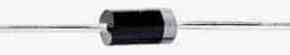
Рис. 7 - Выпрямительные диоды малой мощности
- Диоды средней мощности могут работать с током
в диапазоне 0,3-10 А. Такие элементы, в большинстве своем,
изготавливаются корпусе из металла и снабжены жесткими выводами. На
одном один из них, а именно на катоде, имеется резьба, позволяющая
надежно зафиксировать диод на радиаторе, используемого для отвода тепла.
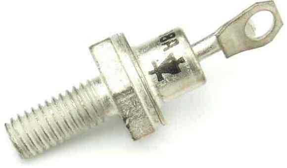
Рис. 8 - Выпрямительный диод средней мощности
- Силовые полупроводниковые элементы, они рассчитаны на прямой ток
свыше 10 А. Производятся такие устройства в металлокерамических или
металлостеклянных корпусах штыревого или таблеточного типа
(рис. 9) .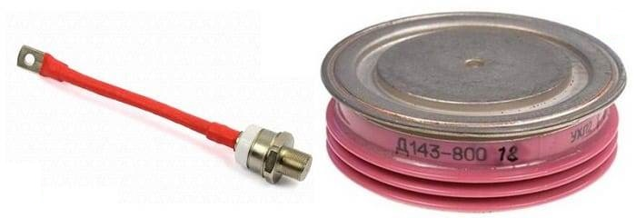
Рис. 9 - Выпрямительные диоды высокой мощности
Источники
asutpp.ru - Выпрямительные диоды: устройство, конструктивные особенности и основные характеристики